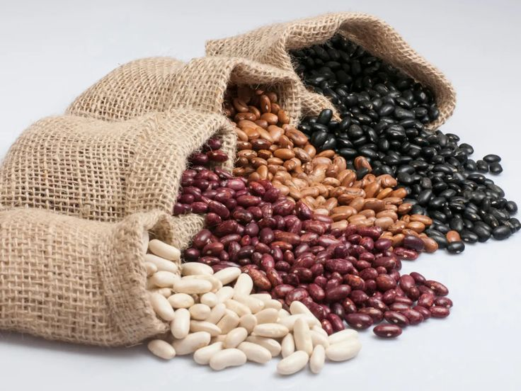
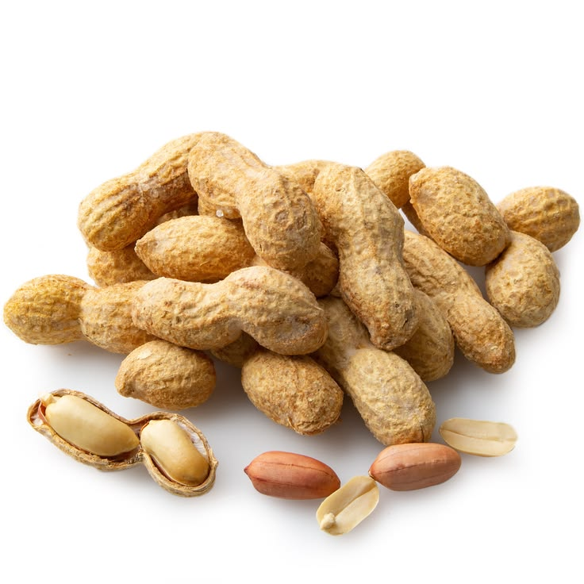
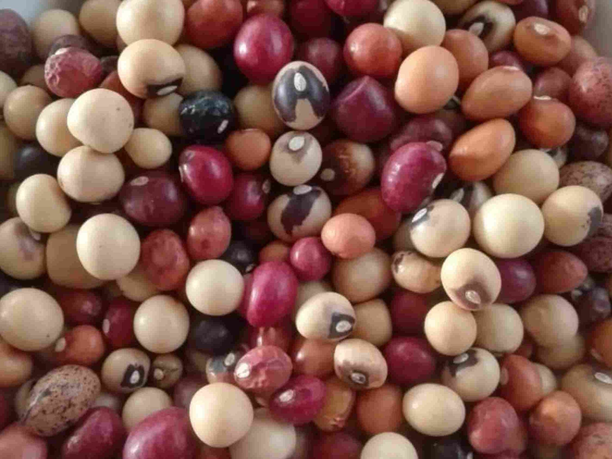

Fine Beans
Tender, vibrant, and full of natural flavor. With their crisp texture and delicate taste, they're perfect for stir-fries, stews, salads, or simply steamed as a wholesome side dish. Packed with fiber, vitamins A and C, and essential minerals, they support healthy digestion, boost immunity, and promote overall wellness. Low in calories yet high in nutrition, Fine Beans are a smart addition to any balanced diet. Grown with care on our farm, we harvest them at peak freshness to deliver maximum flavor, crunch, and nourishment straight to your kitchen.

Peas
Our fresh garden Peas are sweet, tender, and bursting with natural goodness. Their vibrant green color and delicate flavor make them perfect for soups, stews, stir-fries, or simply enjoyed steamed as a wholesome side dish. Rich in plant-based protein, fiber, and essential vitamins like C and K, peas help boost immunity, support bone health, and aid digestion. They’re also a great source of antioxidants that promote overall wellness while staying low in calories. Harvested at peak ripeness, our peas are carefully grown and delivered fresh to bring maximum flavor, nutrition, and vitality straight to your table.

Sugar Snap
Our farm-fresh Sugar Snap Peas are crisp, juicy, and naturally sweet, making them a delightful snack straight from the pod or a vibrant addition to your favorite dishes. Their crunchy texture and refreshing flavor pair perfectly with stir-fries, salads, and light sautés. Packed with fiber, vitamin C, and antioxidants, they help boost immunity, support healthy digestion, and promote overall wellness. Low in calories yet full of nutrition, Sugar Snap Peas are an excellent choice for healthy eating. Harvested at peak freshness, we deliver them straight from our fields to your table, ensuring maximum flavor, crunch, and nourishment in every bite.

Sugar Beans
Our farm-grown Sugar Beans come in a variety of wholesome types, each offering rich flavor and hearty nutrition. Whether enjoyed in stews, soups, curries, or as a protein-packed side dish, these beans bring warmth and satisfaction to every meal. Naturally high in plant-based protein, fiber, and essential minerals like iron and magnesium, they help support energy, digestion, and overall wellness. With their creamy texture and earthy taste, Sugar Beans are a staple for healthy, balanced diets. Harvested with care and available in different varieties, we deliver them fresh and full of goodness straight from our fields to your kitchen.

Chick Peas
Our Chickpeas are hearty, versatile, and naturally packed with nutrition. With their nutty flavor and firm texture, they’re perfect for curries, stews, salads, or blended into creamy hummus. Rich in plant-based protein, fiber, and essential minerals like iron and magnesium, chickpeas help support energy, digestion, and heart health. They’re also a great source of folate and antioxidants, making them a smart choice for balanced diets. Low in fat yet highly satisfying, chickpeas are a staple ingredient for wholesome meals. Harvested with care, we deliver them fresh and full of goodness straight from our fields to your kitchen.

GroundNuts
Our farm-fresh Groundnuts are wholesome, crunchy, and naturally packed with energy. With their rich, nutty flavor, they're perfect for roasting, snacking, or adding to stews, sauces, and baked goods. Groundnuts are an excellent source of plant-based protein, healthy fats, and essential minerals like magnesium and phosphorus, helping to support heart health, strong bones, and sustained energy. They’re also rich in antioxidants and vitamin E, which promote skin health and overall wellness. Versatile and satisfying, groundnuts are a staple ingredient for both traditional dishes and modern recipes. Harvested with care, we deliver them fresh and full of goodness straight from our fields to your kitchen.

RoundNuts
Our farm-fresh Roundnuts are rich, flavorful, and naturally packed with energy. Known for their unique taste and smooth texture, they're perfect for roasting, snacking, or adding to traditional dishes and sauces. Roundnuts are an excellent source of plant-based protein, healthy fats, and essential minerals like magnesium and phosphorus, supporting heart health, strong bones, and sustained energy. They’re also rich in antioxidants and vitamin E, which promote skin health and overall wellness. Nutritious and versatile, roundnuts are a staple ingredient in many African cuisines. Harvested with care, we deliver them fresh and full of goodness straight from our fields to your kitchen.